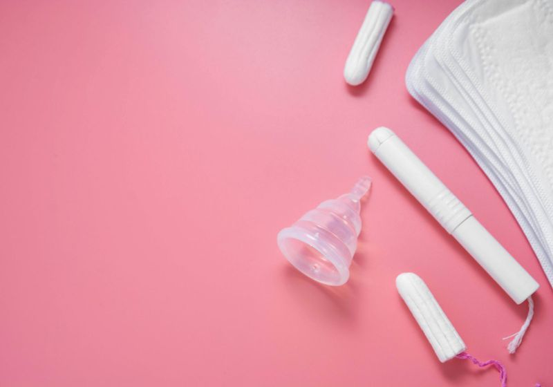
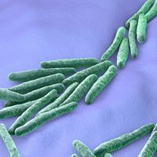
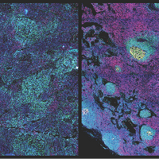

No Proof COVID-19 Vaccine Affects Menstruation or Fertility
As the number of people who have received the COVID-19 vaccines grows, so do the anecdotal stories about side effects.On social media, some women have claimed that after receiving the shot, their menstrual period has gotten heavier, lighter, or varied in duration.To better understand these abnormalities, Kate Clancy, an associate professor of anthropology at the University of Illinois has created a survey for people to share their menstruation experiences following the vaccine.
Despite the lack of scientific evidence, some people’s stories have been extrapolated into rumors that the shots affect fertility and can induce miscarriage among recipients or those around them.
On any given day, roughly 800 million people around the globe are menstruating.As omnipresent as this biological process is, 'menstruation is something we don’t know enough about,' OB/GYN Hugh Taylor of the Yale School of Medicine tells
The New York Times .'It’s an important indicator of a person’s health, like any other bodily function.'
While there is much that remains to be learned about menstruation, there isn’t evidence to support the idea that the COVID-19 vaccine can cause infertility or induce miscarriage in another person.
'The COVID-19 vaccine is not capable of exerting reproductive control via proxy.Nothing is,' writes OB/GYN Jen Gunter in her Substack newsletter, The Vajenda, which frequently debunks scientific misinformation.'This is because it is a vaccine, not a spell.'
In addressing whether a person’s cycle or fertility could be affected by being near a vaccinated individual,
PolitiFact rated it as False.In the explanation, the article quotes pediatrician Risa Hoshino, who, like Gunter, is a veteran of using social media to debunk scientific falsehoods.Hoshino explains that there is nothing in the way that the vaccine was designed that would make it possible to cause those problems.
'The shot cannot be ‘shed.’The shots hold a temporary message that codes for the spike protein, which is a harmless piece of the virus that cannot harm people,' Hoshino writes in an Instagram post, explaining how mRNA vaccines such as Moderna’s and Pfizer’s work.'The message is like a Snapchat, it disappears quickly and will not stay in the body long-term.It’s not a live virus, so therefore it cannot shed—only live viruses such as actual SARS-CoV-2 can do this.'
Although more studies need to be done, the early data show that the opposite of these rumors is true: pregnant mothers who receive the vaccine do so safely.Infection with SARS-CoV-2, on the other hand, has raised concerns among researchers about the risk it poses to a developing fetus.
Posted On: 2021-04-27T00:00:00
Posted By: Lisa Winter



Content Date: 2021-04-27
Download Date: 2021-09-16
Document ID: L0C04G5B0